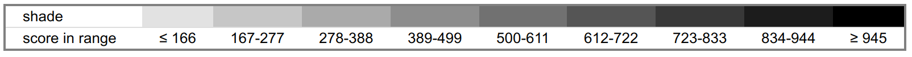

BED 格式数据¶
内容简介
BED 格式数据是高通量测序数据常用格式之一。它与BAM不同，主要针对如基因或突变体数据的展示。常见的bed工具如bedtools，在许多工具流中都集成了bed方式的处理。
BED（Browser Extensible Data，浏览器可扩展数据）格式提供了一种灵活的方式来定义注释轨道中显示的数据行。 BED行有三个必填字段和九个附加可选字段。 每行的字段数必须在注释轨道中的任何一组数据中保持一致。 可选字段的顺序是绑定：如果使用编号较大的字段，则必须始终填充较低编号的字段。
BED信息不应如上所述混合（BED3不应与BED4混合），而是必须填写额外的列信息以保持一致性，例如使用“。”。 在某些情况下，如果字段内容是空的。 自定义轨道中的BED字段可以以空格分隔或制表符分隔。 只有BED类型的某些变体（例如bedDetail）需要对详细信息列进行制表符分隔。
请注意，只有在自定义轨道中，文件的第一行才能包含标题行，标题行以“浏览器”或“轨道”开头，以帮助浏览器显示和解释标题后面的BED数据行。 在诸如bedToBigBed的下游实用程序中不允许这样的注释轨道标题行，bedToBigBed将BED文本的行转换为索引的二进制文件。
对于要储存数据量特别大的BED文件（例如超过50M），应该使用bigBed格式。
BED 格式如下：
- chrom - 染色体的名称（例如chr3，chrY）或scaffold名称（例如scaffold_1）
- chromStart - 染色体或scaffold中特征的起始位置。染色体中的第一个碱基编号为0
- chromEnd - 染色体或scaffold中特征的结束位置
- name - 定义BED行的名称。 当轨道打开到完全显示模式时，此标签显示在基因组浏览器窗口中BED行的左侧，或者在打包模式下直接显示在项目左侧
- score - 得分在0到1000之间。如果此注释数据集的轨迹线useScore属性设置为1，则得分值将确定显示此要素的灰度级别（较高的数字=较深的灰色）
- strand - 定义strand。
.或+或- - thickStart - 绘制特征的起始位置（例如，基因中的起始密码子）。当没有特征起始位置时，thickStart和thickEnd通常设置为chromStart位置
- thickEnd - 绘制特征的结束位置（例如基因中的终止密码子）
- itemRgb - R，G，B形式的RGB值（例如255,0,0）。如果轨迹行
itemRgb属性设置为“On”，则此RBG值将确定此BED行中包含的数据的显示颜色。注意：建议使用此属性的简单颜色方案（八种颜色或更少颜色），以避免压倒Genome浏览器和Internet浏览器的颜色资源 - blockCount - BED行中的块（外显子）数
- blockSizes - 块大小的逗号分隔列表。此列表中的项目数应与blockCount相对应
- blockStarts - 以逗号分隔的块开始列表。应该相对于chromStart计算所有 blockStart 位置。此列表中的项目数应与blockCount相对应
在具有块定义的BED文件中，第一个blockStart值必须为0，以便第一个块从chromStart开始。同样，最后的blockStart位置加上最后的blockSize值必须等于chromEnd。块可能不重叠。
Tips
此表显示了Genome Browser将BED分数值转换为灰色阴影 
基本例子：
track name=pairedReads description="Clone Paired Reads" useScore=1
chr22 1000 5000 cloneA 960 + 1000 5000 0 2 567,488, 0,3512
chr22 2000 6000 cloneB 900 - 2000 6000 0 2 433,399, 0,3601
下面示例显示了一个注释轨迹，该轨迹使用itemRgb属性为每个数据行单独着色。 在此轨道中，颜色方案区分名为“Pos *”的项目和名为“Neg *”的项目。 有关调色板限制，请参阅上面itemRgb描述中的使用说明。 注意：此示例中的轨道和数据行已重新格式化以用于文档目的。 此示例可以粘贴到浏览器中而无需编辑。
browser position chr7:127471196-127495720
browser hide all
track name="ItemRGBDemo" description="Item RGB demonstration" visibility=2 itemRgb="On"
chr7 127471196 127472363 Pos1 0 + 127471196 127472363 255,0,0
chr7 127472363 127473530 Pos2 0 + 127472363 127473530 255,0,0
chr7 127473530 127474697 Pos3 0 + 127473530 127474697 255,0,0
chr7 127474697 127475864 Pos4 0 + 127474697 127475864 255,0,0
chr7 127475864 127477031 Neg1 0 - 127475864 127477031 0,0,255
chr7 127477031 127478198 Neg2 0 - 127477031 127478198 0,0,255
chr7 127478198 127479365 Neg3 0 - 127478198 127479365 0,0,255
chr7 127479365 127480532 Pos5 0 + 127479365 127480532 255,0,0
chr7 127480532 127481699 Neg4 0 - 127480532 127481699 0,0,255
也可以使用轨迹线中的colorByStrand属性在BED轨道中逐个项目着色，如下所示。 对于BED轨道，该属性仅用于具有6到8个字段的自定义轨道（即BED6到BED8）。 注意：此示例中的轨道和数据行已重新格式化以用于文档目的。 此示例可以粘贴到浏览器中而无需编辑。
browser position chr7:127471196-127495720
browser hide all
track name="ColorByStrandDemo" description="Color by strand demonstration" visibility=2 colorByStrand="255,0,0 0,0,255"
chr7 127471196 127472363 Pos1 0 +
chr7 127472363 127473530 Pos2 0 +
chr7 127473530 127474697 Pos3 0 +
chr7 127474697 127475864 Pos4 0 +
chr7 127475864 127477031 Neg1 0 -
chr7 127477031 127478198 Neg2 0 -
chr7 127478198 127479365 Neg3 0 -
chr7 127479365 127480532 Pos5 0 +
chr7 127480532 127481699 Neg4 0 -